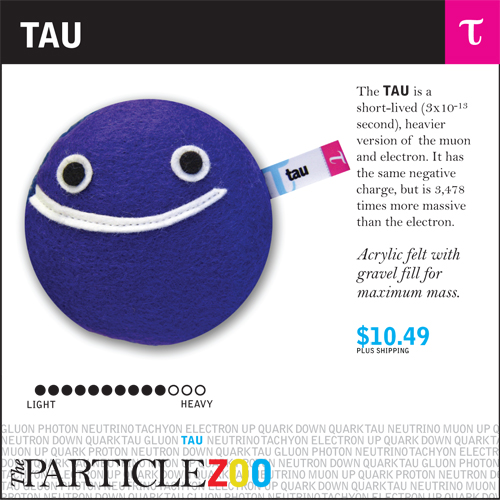

Research and Software projects
Igor Marfin, physicist
|
|
| Born: | 1979 |
|---|
| Nationnality: | Belarus |
|---|
|

|
Research
- W gauge boson physics (phenomenology and experimental searches)
- Top quark physics (phenomenology and experimental searches)
- Higgs physics (phenomenology and experimental searches)
- Supersymmetry phenomenology
- Structure of nucleon, parton distribution functions
- Methodology of event reconstruction at future collider experiments
- Techniques for the track reconstruction, muon reconstruction
and heavy flavor tagging at the collider experiments
- Techniques for calculation of high orders effects in electroweak interactions
- Techniques for Monte Carlo simulations
- Techniques of Multivariate analysis
- The statistical analysis in experiments
Software projects
- FORTRAN based MC generator to estimate AQGC in $\gamma\gamma\rightarrow WW(Z)$
- FORTRAN based MC generator to estimate high order electroweak effects to $\gamma\gamma\rightarrow WW(Z)$
- C++ based module to the CMSSW software for analysis of effects from AQGC in
\(pp\rightarrow WWX_1X_2\)
process at CMS
- C++ based MC generator to simulate process of DIS $eP\rightarrow\nu X$ with high order electroweak effects at HERA
- C++ based framework for the CMSSW software to reconstruct $pp\rightarrow t\bar{t}+jets$ processes in the CMS
- C++ based framework for the CMSSW software of data-driven calibration of btagging methods in the CMS experiment
- C++ based framework for the CMSSW software of model-independent $H+b\rightarrow 3b$ analysis in the CMS experiment
- C++ software based on RooStats API for statistical interpetation of the results in MSSM (SUSY)
- Python based framework for optimization methods of multivariate analysis. adopted to API TMVA.